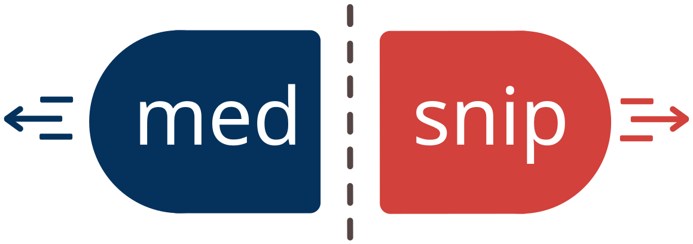
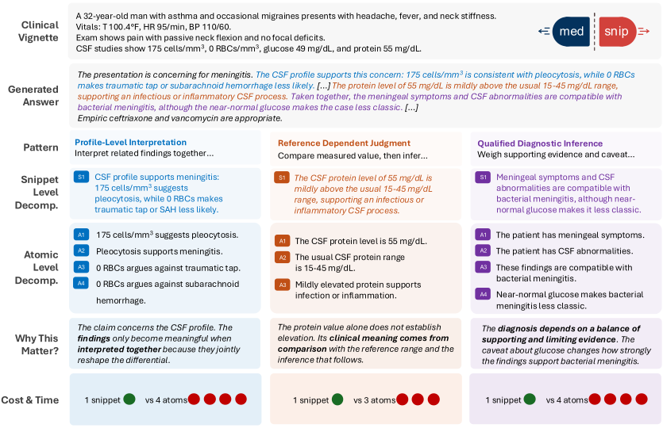

Atom-level decomposition fragments clinical judgments, leaving the verifier with claims that are formally standalone but clinically incomplete. MedSNIP verifies snippets instead, clause-grouped units that keep the structure intact.
1MBZUAI · 2Yale · 3Korea University · 4Beijing Normal · 5INSAIT, Sofia University
Three real judgments from MedSNIP-Bench, each grouped by a different structural pattern. Toggle the verification unit and see what the verifier actually receives.

Annotators labelled every snippet with the structure that justifies it. Three patterns merge atoms and three keep a claim standalone.
A–C merge related atoms · D–F keep a claim atomic. The largest merge-pattern gain is on B, the causal-conditional chains.
@inproceedings{
anonymous2026medsnip,
title={Med{SNIP}: Building and Benchmarking Snippet-Level Granularity for Medical Fact Verification},
author={Anonymous},
booktitle={The 2026 Conference on Empirical Methods in Natural Language Processing},
year={2026},
url={https://openreview.net/forum?id=1vYUGLZnvr}
}